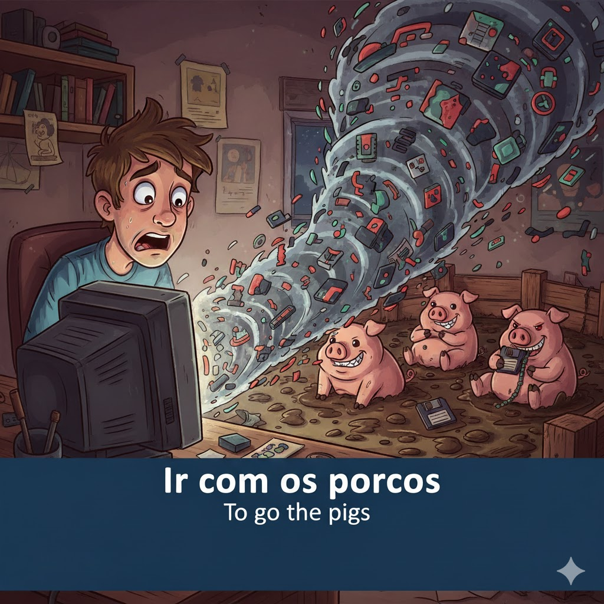
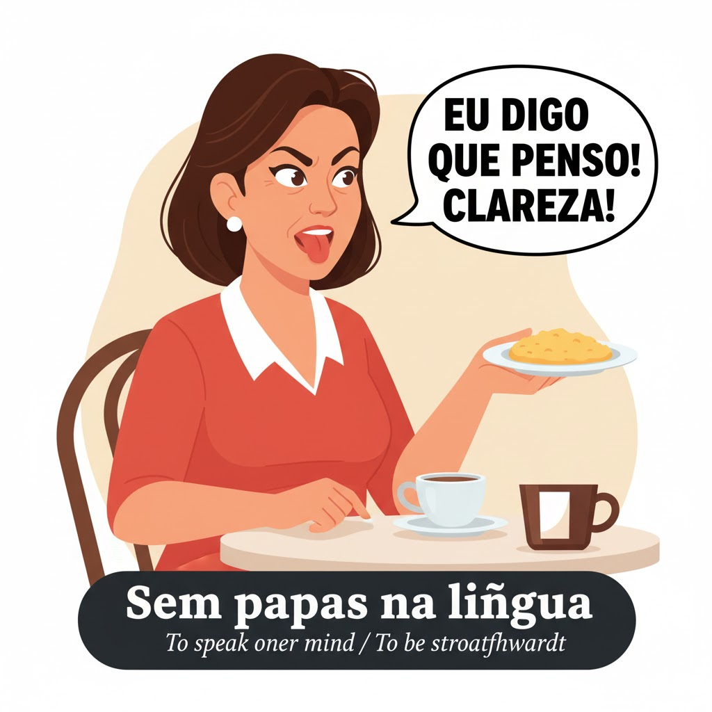

Estas expressões são usadas frequentemente em conversas informais e ajudam a soar mais nativo.
Lista Essencial

Ir com os porcos
Tradução Literal: To go with the pigs
**English Meaning:** To **die**, be **destroyed**, or be completely ruined/lost (used when speaking of objects, plans, or files).
Exemplo: O computador avariou-se e todos os meus ficheiros foram com os porcos.

Sem papas na língua
Tradução Literal: Without mush on the tongue
**English Meaning:** To be **straightforward**, to speak one's mind, or to be brutally honest (without mincing words).
Exemplo: A Maria é a única que diz a verdade, ela não tem papas na língua.
Cair no goto
Tradução Literal: To fall in the throat/gullet
**English Meaning:** To be **easily accepted** or to be agreeable/to one's liking (said of food, people, or ideas).
Exemplo: Não sei porquê, mas este novo colega caiu no goto de toda a gente.